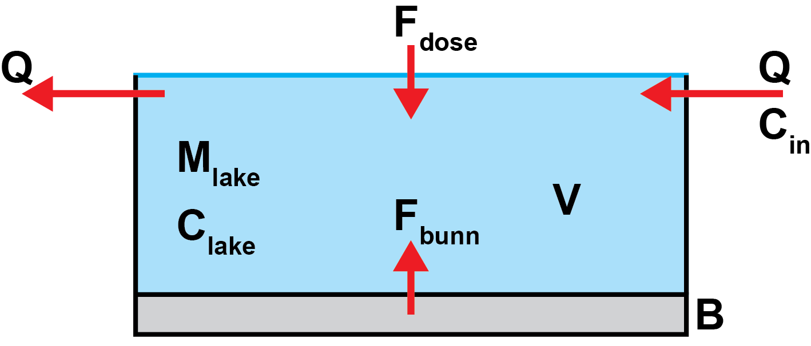

Lake modelling
The calculations performed by the application and described on this page are a subset of those implemented by the original TPKALK application developed by NIVA during the 1990s.
1 Types of lime
Lime products used for catchment management are usually a mixture of calcium carbonate (calcite, \(CaCO_3\)) and magnesium carbonate (\(MgCO_3\)). Rocks composed primarily of \(CaCO_3\) are commonly called limestones, whereas carbonate rocks with significant proportions of magnesium are called dolomites or dolomitic limestones.
Lime manufacturers will typically specify the proportion of calcium and magnesium carbonate in their products. For example, Microdol5 is reported as being 53.7% \(CaCO_3\) and 44.4% \(MgCO_3\) by mass (with 1.9% other impurities).
Magnesium carbonate has a higher acid neutralising capacity (ANC) than calcium carbonate: 1 g of magnesium carbonate will neutralise as much acid as 1.19 g of calcium carbonate. When comparing limes with different compositions, it is therefore common to multiply the magnesium carbonate proportion by a factor of 1.19. This gives a total neutralising value (TNV), estimated as the sum of calcium carbonate equivalents (e.g. Table 1).
| Parameter | Microdol5 | VK3 | |
|---|---|---|---|
| Calcium |
|
|
99.0 |
| Magnesium |
|
|
|
| TNV (sum of CaCO3-ekv; %) | |
100.2 | |
TNV is usually specified in percent: pure calcium carbonate has a TNV of 100 %, pure magnesium carbonate has a TNV of 119 %, and typical dolomite products have TNVs that are somewhere in between. Weight for weight, products with a higher TNV will be more effective at increasing pH, as long as all the lime dissolves. In practice, different limes exhibit different dissolution rates, which must also be accounted for.
2 Lime solubility
Several factors affect the dissolution rate of lime material added to a waterbody. These include:
Physical and chemical properties of the lime (crystal structure etc.).
Particle size (i.e. fineness) of the lime material - smaller particles give a larger reaction surface and therefore dissolve faster.
Water pH - more acidic lakes react with the lime more vigorously.
Application method (for example from a boat versus from a helicopter).
Amount of lime added, usually called the dose. If large amounts of lime are added to a lake all at once, the overall effect on pH is less than might be achieved if smaller amounts were added more regularly. This is because, at high doses, pH and calcium concentration increase in the immediate vicinity of the lime particles, which then sink to the bottom without dissolving efficiently. It is also more likely that lime particles will clump together and sink more rapidly. This effect is called overdosing.
Most commercial lime products are fine enough to dissolve effectively. For a given application method and lake pH, the goal is therefore to identify which lime product to use (i.e. which physical and chemical properties to select) and in what dose (to minimise the number of applications necessary, without excessive waste due to overdosing).
Lime dissolution rates and the effects of overdosing are determined experimentally - see the Column tests page for details.
3 Relationships between Ca and pH
A simple empirical relationship between pH and change in calcium concentration is given in Equation 1
\[ pH = pH_0 + A_{pH} log(\Delta Ca) \tag{1}\]
where \(pH\) is the expected pH after liming; \(pH_0\) and \(A_{pH}\) are constants determined by lake properties; and \(\Delta Ca\) is the change in calcium concentration due to liming expressed in \(\mu ekv/l\) (i.e. micro-moles of charge).
We need to check this equation, as its physical interpretation seems questionable: it only makes sense for \(\Delta Ca \geq 1\); adding smaller amounts of Ca than this actually reduces the pH. Furthermore, if \(\Delta Ca\) is zero, the result is undefined, whereas I would expect the change in pH for this case to be zero and for \(pH_0\) to reflect the pH before liming. Wouldn’t it make more sense to either regress expected change in pH against change in Ca, or simply pH against Ca?
For any given lake, if detailed measurements of pH and calcium concentration are available before and after liming, the parameters \(pH_0\) and \(A_{pH}\) can be estimated from Equation 1 using linear regression. If measured data are not available, the TPKALK report suggests default values based on water colour and pH before liming (Table 2). TPKALK also constrains user-supplied values of \(pH_0\) to lie in the range 0 to 6, and \(A_{pH}\) to be in the range from 0 to 3.
| pH før kalking | Fargetall (mgPt) | \(pH_0\) | \(A_{pH}\) |
|---|---|---|---|
| 5 | 0 | 3.5 | 1.8 |
| 5 | < 5 | 3.9 | 1.2 |
| < 5 | < 20 | 3.5 | 1.5 |
| 5 | > 20 | 4.3 | 0.7 |
The expected change in lake pH soon after liming can be estimated using Equation 1 and data describing how much of the lime will dissolve quickly (i.e. the instantaneous dissolution from column tests).
Consider a lake with an initial pH of 4.5, colour value of 15 mgPt and a volume of 1 000 000 \(m^3\). 50 tonnes of Miljøkalk EY3 added, which corresponds to a dose 50 \(g/m^3\) or 50 mg/l of lime. Based on the figure here, the overdosing factor for this lime at 50 mg/l is 2.2, which means around \(100 / 2.2 = 45.5 \ %\) of the lime will dissolve rapidly. Furthermore, the calcium content of this lime reported by the manufacturer is 38.5 %. We therefore expect the liming operation to change the concentration of calcium in the lake by \(0.45 \times 0.385 \times 50 = 8.75\) mg/l, which corresponds to \(\Delta Ca = 437.5 \ \mu ekv/l\).
Using Table 2, for this lake \(pH_0 = 3.5\) and \(A_{pH} = 1.5\). Substituting values into Equation 1 yields an estimate for the pH shortly after liming of around 7.5.
4 Mass balance model
The example above is simplistic, since it ignores several factors that influence long term calcium concentrations in lake water. In particular, the example only considers short term effects from instantaneous dissolution and ignores longer terms effects of lime accumulating on the lake bottom and dissolving over periods of months and years.
To provide an estimate of both the initial change in lake conditions due to liming and the subsequent evolution over time, the original TPKALK model implemented a mass balance “box model”(Figure 1) where:
- \(D\) is the dose of lime added (adjusted for Ca content i.e. the actual dose of Ca in mg/l)
- \(C_{inst}\) is the “immediate” increase in lake Ca concentration (in mg/l) due to instantaneous dissolution
- \(C_{bott} = D - C_{inst}\) is the amount of Ca (in mg/l) that sinks to the lake bottom, forming a layer that dissolves more slowly
- \(F_{slow}\) is the rate at which concentration increases (in mg/l/month) due to dissolution of the bottom layer
- \(C_{in}\) and \(C_{out}\) are the inflow and outflow concentrations of Ca, respectively (both in mg/l)
- \(V\) is the lake volume in litres. The lake is assumed to be in steady state i.e. \(V\) is constant
- \(Q\) is the discharge in l/month. To satisfy the steady state assumption, the inflow discharge must equal the outflow discharge
- \(M_{lake}\) is the mass of Ca dissolved in the lake water (in mg)
- \(C_{lake}\) is the Ca concentration in the lake, equal to \(\frac{M_{lake}}{V}\). The lake is assumed to be well mixed, such that the outflow concentration, \(C_{out}\), is equal to \(C_{lake}\)

Balancing the main sources and sinks of Ca to the lake gives
\[ \frac{dM_{lake}}{dt} = V \frac{dC_{lake}}{dt} = Q C_{in} - Q C_{lake} + V C_{inst} + V F_{slow} \tag{2}\]
or
\[ \frac{dC_{lake}}{dt} = \frac{Q C_{in} - Q C_{lake}}{V} + C_{inst} + F_{slow} \tag{3}\]
The lime that sinks to the bottom, \(C_{bott}\), is assumed to dissolve quickly at first, then more slowly as time passes. TPKALK uses an exponential function to represent this slow dissolution effect
\[ F_{slow} = \frac{dC_{slow}}{dt} = C_{bott} K_L e^{-K_L t} \tag{4}\]
The integral of the function \(K_L exp(-K_L t)\) from zero to infinity is equal to 1. This functional form is chosen in order to conserve mass: the total amount of lime on the bottom of the lake is enough to increase the lake concentration by \(C_{bott}\) mg/l. Between any two time points, the function for \(F_{slow}\) can be integrated to give a number between 0 and 1 representing the proportion of \(C_{bott}\) that dissolves within the period. For periods soon after adding lime this proportion will be large, and it decays over time. However, because the total area under the curve is equal to one, the total amount of lime that dissolves from the bottom layer can never be greater than \(C_{bott}\).
The parameter \(K_L\) (units \(month^{-1}\)) is the “deaktiveringskoeffisient”, a constant that controls how fast lime on the lake bottom dissolves.
An initial Python implementation of this model is here.